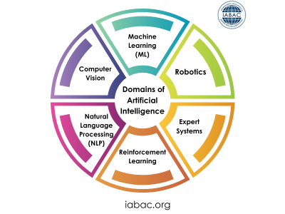
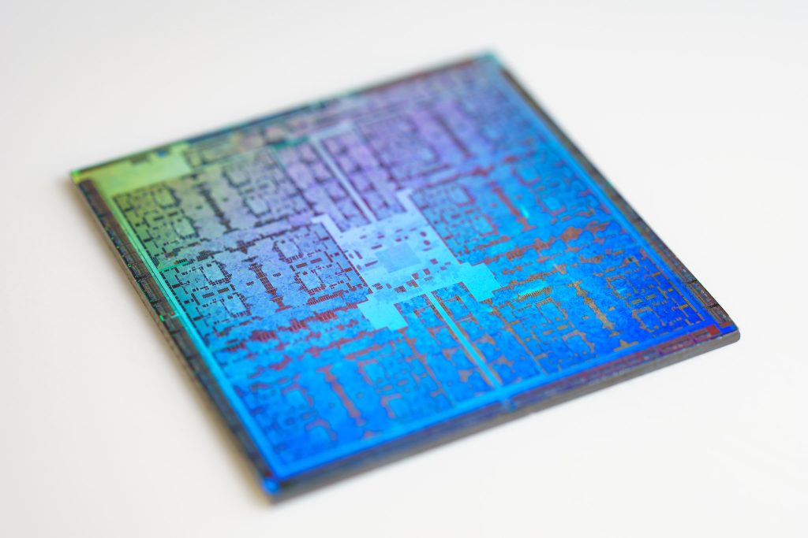
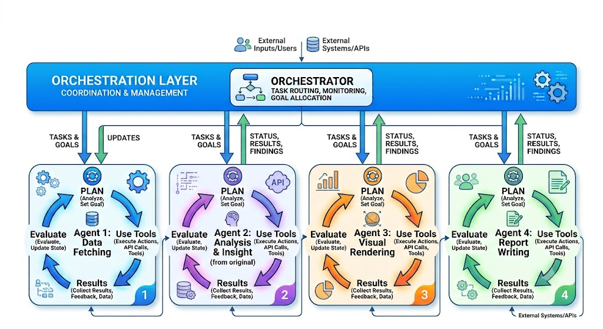

![Maranatha Baptist University]()
Foundations of Artificial Intelligence:
Literacy and Applications
The IDAI 200 AI Fundamentals Course Textbook
Preface and Chapters 1–7, compiled from the course's weekly readings
Preface
Foundations of Artificial Intelligence: Literacy and Applications
This textbook was assembled for the MBU IDAI 200 AI Fundamentals course to give students a single, coherent text that matches the order of course material. Its seven chapters are embedded throughout the course's Weeks 1 through 7; Week 8 is a cumulative review and assessment week and does not introduce new content, so no chapter corresponds to it. The chapters are numbered by the sequence in which the concepts are taught.
Most of this book's material is compiled from three sources and combined into a single narrative using Claude Cowork. Some passages from the open-source Charles Sturt University Library's Digital Skills: Artificial Intelligence textbook, and from the University of Queensland's Artificial Intelligence textbook, are reproduced verbatim. Additional content was written by J.D. Coleman and some material has also been adapted from Clawdemy's online lessons. The AI Fundamentals course plan was used only to determine which topics belong in which week; no CompTIA content was reproduced or adapted into this book.
This book is licensed CC-BY-NC-SA 4.0. Clawdemy's original material carries that license, and because it requires any work that incorporates and expands it to carry the same license (ShareAlike), the compiled book as a whole is released under CC-BY-NC-SA 4.0; this is compatible with the CC-BY-NC license under which the CSU and UQ material is used, since CC-BY-NC-SA is more restrictive and does not conflict with it.
Week 1 Reading
1. What is Artificial Intelligence?
Key Terms and Concepts
Most people using artificial intelligence today began using it before they had any clear idea what it was. A phone finished a sentence, a bank flagged a strange charge, a chat window produced a paragraph that sounded uncomfortably professional, and the technology arrived without an explanation attached. This chapter supplies the explanation. It does not assume any technical background, and it does not require any programming, because the tools this course is about are operated in ordinary language.
Defining Artificial Intelligence
The term artificial intelligence (AI) was coined in 1956 to describe “the science and engineering of making intelligent machines”. Today, artificial intelligence can be defined as machines behaving in ways that humans generally consider intelligent by problem solving or completing tasks. It is a very broad subject that involves computer science, cognitive science, mathematics, philosophy, neuroscience, linguistics and many other disciplines. Over the last decade, AI technologies have been incorporated into a wide range of consumer and enterprise products and services. The rapid development of generative artificial Intelligence (GenAI) — technology capable of generating text, images, video, audio, and code — is transforming how we interact with technology at home and at work. Increasingly, technology companies are discussing the emergence of artificial general intelligence (AGI), where AI tools match or outperform humans across a broad range of tasks.
Domains of AI
Artificial intelligence has several underlying domains or fields that are helpful to understand. You may have heard some of these terms before.

"The Key Domains of Artificial Intelligence: Comprehensive Overview" is licensed under a Creative Commons Attribution-ShareAlike 4.0 International License, except where otherwise noted.
Real-world Applications
You might be using AI technologies already embedded in consumer-facing products and platforms. Your mobile phone may have a virtual assistant (Siri, Gemini, Google Assistant, Alexa) that relies on natural language processing to convert your words into prompts the machine can understand and respond to. Your photo app may use machine learning to improve image recognition, allowing you to search your photo Library for pictures of dogs. It can be used for actions such as shopping, translating text and searching. Your translation app may use a neural network to figure out what word should come next.
Types of Artificial Intelligence
Generative AI
Generative AI (GenAI) refers to machine learning models designed to create new content ranging from text and images to music. Text-based GenAI is based on Large Language Models (LLMs) trained on trillions of words so that it can predict complex and detailed arrangements of words in response to written prompts. LLMs like ChatGPT have rapidly increased in popularity in recent years, as these AI tools can respond quickly to user prompts, enabling opportunities for real-time application. Other GenAI tools like Midjourney use specialized visual architectures like diffusion models to generate images in response to written prompts. Just about any kind of human-like output can be generated given a large enough training data set. As a result, GenAI can create contextually relevant, human-like responses to user prompts and is versatile enough to generate software code, images, video, song lyrics and music.
Large Language Models
Since OpenAI launched ChatGPT in 2022, large language models (LLM) have emerged as one of the most visible and widely used generative AI technologies. LLMs are a type of generative AI trained on vast amounts of text using deep learning and neural networks. Users can prompt LLMs, typically via a chat interface and increasingly by voice, to generate sophisticated responses. These chatbots are widely capable and can be applied to a range of tasks. They can:
- engage in conversation
- generate text, images, video, audio and code
- translate text
- summarize content
- identify patterns
- answer questions.
Many of the biggest technology companies have developed LLMs, including Google, Anthropic, XAI, and Meta.
Multimodal AI
Multimodal AI refers to artificial intelligence systems capable of processing, combining, and reasoning across multiple distinct types of data simultaneously. For example, a multimodal AI tool might use a chat interface like an LLM that unifies multiple layers of AI models that are capable of generating text, images, audio, video, etc. Unlike traditional unimodal AI, which operates on a single input format, multimodal models integrate these diverse inputs into a unified framework to capture deeper context and cross-media relationships. This enables the system to generate richer, more accurate outputs and mirror human-like, multisensory comprehension.
Predictive AI
Predictive AI uses machine learning to extrapolate and make predictions from patterns it identifies in data. This allows it to potentially forecast future events and enhance outcomes. This type of AI is can be used in finance to make trades on the stock market, or in science to analyze large amounts of data.
Agentic AI
Many AI companies, including Microsoft, Google, Anthropic, and OpenAI, have created agentic AI tools capable of autonomously executing tasks and completing processes with minimal human oversight, which organizations are using to support customer service inquiries, manage workflows and processes, conduct detailed research and information retrieval, and generate code and software.
Example of using a chatbot versus an AI agent:
Using a chatbot:
- Enter your prompt - How do I reference a website in APA 7th?
- Provides an answer.
Using an AI agent set up to perform this task:
- Enter your prompt - Review this assessment draft and identify sources that need APA referencing.
- Scans the document, finds sources, identifies issues and suggests corrections.
Artificial General Intelligence (AGI)
AGI is the type of AI that is typically depicted in movies like I, Robot (2004) with Will Smith. AGI is expected to be able to continuously learn from and use prior knowledge to make decisions, reason, solve problems, make judgments and plan. AGI hypothetically possesses intelligence that equals that of any human in any area. It is purely theoretical at this point and there is debate about how we will know if or when AGI is achieved.
How AI Works
An AI model is, at it's core, a collection of billions or even trillions of stored numerical values called parameters. These values are used to guide large-scale calculations that take place whenever the model runs. So AI models do not "think" the way we do - they treat every task as a math problem and predict their response to every prompt based on the stored values that guide their calculations. These stored values are set through the model training process. When a model "learns," it is not internalizing concepts the way a student does. It is trained by repeatedly predicting the next word in vast quantities of text, comparing that prediction against what the text actually says, and adjusting itself very slightly so that it is a little more likely to be right the next time. Repeat that across trillions of sentences and the model ends up with a detailed statistical map of how language works. Grammar, the relationships between related words, and even the structure of reasoned argument all emerge from this process, not because the model understands any of them, but because those patterns are reliably present in how people write.
A model trained this way is knowledgeable but unhelpful. It will continue any text it is given, including text nobody wants. Turning it into an assistant takes a further process in which people compare pairs of possible answers and indicate which they prefer. Those preferences train a separate model that predicts how a person would rate any given answer, and the original model is then nudged, over many cycles, toward answers that score well. This is why current AI assistants are concise, cooperative, and reluctant to produce harmful content: not because they want to be, but because those patterns scored well against recorded human preferences.
Hardware and chips
The massive amount of simultaneous calculations involved in performing dynamic and simultaneous calculations at the scale needed to run AI models requires state-of-the-art chips that are faster and more efficient than typical computer chips. Graphics Processing Units (GPUs), in particular, have become integral to the rollout of AI technologies for their “number-crunching prowess” (What is a GPU? An expert explains the chips powering the AI boom, and why they’re worth trillions).

NVIDIA chip under a CC0 1.0 license.
Chip makers are now among the most valuable publicly traded companies. For instance, the NVIDIA Corporation’s market cap has increased significantly alongside the expansion of GenAI tools, rising from approximately $735 billion (December 2021) to 4.9 trillion (July 2026).
Week 2 Reading
2. Prompt Design and Context
What is prompting?
Prompts are the input instructions for AI tools to perform tasks. They can include text, data (such as tables) or images. The input of a prompt is converted into tokens by the AI tool. Tokens represent the prompt elements converted into a form that the tool understands. These are processed and converted back into words or other outputs. The tool prompt length is limited by the number of tokens allowed to be input. A prompt is better understood as a set of constraints than as an instruction. The model's knowledge was fixed during training and your prompt adds nothing to it; what the prompt does is force the model to draw from one particular region of what it already contains. A direct request with no examples narrows the enormous space of possible outputs down to the neighborhood you described. This is why small changes in wording produce large changes in output — you are not persuading the model, you are redrawing the boundary it works inside. Supplying one or more examples of the pattern you want narrows that boundary considerably further. This is commonly described as few-shot prompting, in contrast to zero-shot prompting where no examples are given. The examples do not teach the model a new skill; they identify which of its existing patterns to draw on and in what register. In practice, two or three well-chosen examples routinely outperform a paragraph describing what you want, because an example shows the target directly rather than asking the model to infer it from a description.
Components of a good prompt
Several frameworks exist for organizing a prompt, and they differ mainly in vocabulary. One compact version holds that a strong prompt has three parts: the task, meaning what you want the tool to do; the instructions, meaning how you want it done; and the context, meaning what you want the tool to know. Another common framework is the role–task–context–format framework.
, Task (green), Context (orange), and Format (purple)")
Generated by Google's Nano Banana 2 image generation model
Prompting tips
- Use instructional verbs: summarize, classify, write, and compose.
- Expand on prompts iteratively — your first go doesn’t have to be perfect!
- Write short but detailed prompts. Break down your tasks into a subtask list if needed.
- Tell the AI what to do rather than tell it what not to do. Negative prompts can be useful in image generators.
Read Please Be Polite to ChatGPT on why being polite to your chatbot makes for better responses.
Context is the component most often omitted and the one that most improves results. The reason follows directly from Chapter 1: the model predicts from the material in front of it. Deprived of context, it predicts the most generic document its training would suggest. Supplied with real context, it predicts something shaped like your actual situation. A short set of habits reliably improves output. Start simple and build through conversation rather than attempting one perfect prompt. Be specific. State what you want rather than what you want avoided, since naming the thing to avoid places those very words into play. Ask for several options rather than one. Fence off pasted material clearly so the tool can tell your instructions from your source text. Start a fresh conversation when a thread has accumulated dead ends, because the tool rereads the entire conversation each time and old mistakes continue to steer new answers. And when writing the prompt is itself the hard part, ask the tool to draft the prompt.
Types of Prompts
Simple Prompts
A simple prompt or zero-shot prompt relies on the LLM training data to answer a question without any examples.
- Provide a list of ten ideas for a report on solar energy issues.
- Write a poem about Maranatha Baptist University.
Few-shot Prompting
Few-shot prompting provides examples of how a task is to be solved. It is used to guide the required output. An easy example is sentiment analysis.
Input: Here are a few examples of movie reviews and what sentiment they have:
- Review: "This movie was absolutely fantastic! I loved every minute of it."
- Sentiment: Positive
- Review: "The plot was confusing and the acting was terrible. What a waste of time."
- Sentiment: Negative
- Review: "It was okay. Not great, not terrible, just average."
- Sentiment: Neutral
Now, classify the sentiment of this review: "The special effects were amazing, but the story was predictable and the characters were flat." Output:
Chain-of-thought prompting
Chain-of-thought prompting is a technique in which the model is encouraged to provide reasoning for its answer in a series of logical steps to solve a problem. This type of prompting increases the transparency of the answer and encourages critical evaluation of the outputs. We will discuss more about how AI reasoning works in the next chapter.
Input: Yes or no: Would a pear sink in water? Provide reasoning for your answer in logical steps before providing an answer. Output:
[Prompted August 9, 2026, OpenAI (2026), GPT 5.6 Luna response]
Why the Same Prompt Produces Different Answers
Students frequently notice that an identical question asked twice produces two different answers, and reasonably conclude that the tool is unreliable. The behavior is real, but it is a design property rather than a malfunction, and understanding it converts an irritation into a control. Unlike a calculator, a generative model does not produce one correct answer. At every word it holds a ranked set of plausible continuations with associated probabilities, and it selects from that set. Asked to complete "the capital of France is," the word Paris carries an overwhelming probability, but the alternatives are not at zero. This is precisely the property that allows the same tool to be useful for both factual summary and creative drafting.
Most tools expose settings that govern this behavior. Temperature determines how far the model may stray from its highest-probability choice: a low setting keeps output conservative and predictable, a high setting permits more surprising and varied language. Two related settings, commonly labeled top-k (selecting the number of top-ranking responses to consider) and top-p (selecting only the group of potential responses whose combined probabilities reach a set threshold for consideration), determine how wide a field of candidates the model considers before choosing at all.
Taken together, these settings define where the model may explore, while temperature governs how boldly it explores within that space . The same mechanism explains the failure mode that Chapter 4 treats at length. A hallucination — a confident statement that happens to be false — is the model selecting a statistically plausible continuation that is not factually correct. No separate malfunction is required to produce one. The practical implication is that a single answer should be read as one sample rather than as a verdict: asking again, or rephrasing, is a legitimate and often necessary move.
Beyond the Single Prompt: Standing Instructions and Supplied Documents
Everything so far concerns one request typed into an empty box. Two further techniques extend the same logic and remove most of the repetition from everyday use. The first is the standing instruction, often called a system prompt: instructions and context written once, stored in a designated place, and silently attached to every subsequent conversation. It might record who you are, how you prefer output formatted, and what the assistant is for. Nothing unusual is happening here; the model is still predicting from what is in front of it, and a standing instruction simply guarantees that certain material is always in front of it. A standing instruction should hold only what is stable — per-task detail belongs in the individual prompt. The second is retrieval, sometimes called retrieval-augmented generation (RAG). You supply a set of documents that matter to you; when you ask a question, the system searches those documents and quietly attaches the most relevant passages to your prompt before the model answers.
This is not a different kind of machine. It is the same prediction system with an automated librarian in front of it. Two benefits follow: your own documents can be more current than the model's training data, and grounding answers in real material reduces, though it does not eliminate, invented content. The corresponding limitation is that an assistant built this way is a specialist whose competence extends exactly as far as the documents provided and no further.
Both techniques rest on a capacity worth naming, because it also explains a common frustration. When a tool appears to remember earlier parts of a long exchange, what actually happens is that the entire conversation is re-sent to the model with each new message, up to a limit called the context window. Nothing is being stored; the material is being reread each time. Early tools had small context windows and would effectively lose the beginning of a conversation before reaching its end. Modern tools have much larger ones, which is what makes supplying whole documents practical.
Conclusion
Prompting is less a technical skill than clear thinking made explicit. The components of a good prompt — a defined task, specific instructions, and adequate context — are the same components of a good brief given to a colleague, which is why practice with a tool that never tires quietly improves how you delegate to people. Two ideas from this chapter carry forward. The first is that variation in output is structural rather than accidental, so one weak answer is a sample and not a judgment on the tool or on you. The second is that context is the lever with the largest effect and the one most often left unused. Chapter 3 takes up what happens when a single well-formed request is still not enough: how to direct a model across a sustained exchange, and how asking it to work through a problem in visible steps changes what it can reliably do.
Additional resources on prompt engineering
- Prompting 101 (YouTube 24m 52s) by Anthropic
- Prompt Engineering Guide by Learn Prompting
- Prompt Engineering Guide by DAIR.AI
- Columbia University: How to talk to AIs - Advanced Prompt Engineering
Want to learn more? Watch Four Methods of Prompt Engineering (YouTube, 12m 41s) by IBM Technology.
Week 3 Reading
3. Risk Management and Verification
The previous chapter was concerned with getting good output. This one is concerned with knowing whether the output you received is any good, and with the obligations that come with using these tools. The two subjects belong together. Responsible use is not a disclaimer attached at the end of a project; it is a set of checking habits built into the work itself. This chapter begins with a map of the kinds of risk these systems carry, and then builds a framework for evaluating both tools and outputs to mitigate these issues and use AI responsibly.
Risks, Limitations, and Constraints
Different AI programs and generators have different risks, limitations and constraints. For this reason, you may need to use several tools to achieve the results you are looking for and each comes with drawbacks. Koch (2023) noted that be cause AI requires a lot of data, there can be blind spots, where it won’t know what to do, or times when it does not consider rights or legislation such as privacy laws. Some key risks, limitations and constraints are listed below.
- Inaccurate information / hallucinations
- Date cutoff in model training
- Data bias/misrepresentations. Models cannot think critically about research/outputs.
- Blind spots due to new situations/ inputs/information so unsure what to do
- May ignore legislation and privacy laws
- Limits of use due to pricing/ subscription costs
In your evaluation and analysis of tools, it is good practice to note any risks, limitations or constraints that may have impacted your results.
Bias
Bias is a distortion of facts based on inclination or prejudice. This could lead to unfair results or treatment of people or research. Results that AI generates may have bias, based on how the AI was programmed, or what data/prompts you input into the program. Koch (2023) noted that “If your data isn’t representative, the AI will replicate that bias in its decision making, which is exactly what Amazon saw when its AI recruitment bot penalized women candidates after being trained on resumes in a male-dominate d dataset.” Bias in data or results that AI generates from your input, can impact on your studies. It is therefore important to try to be inclusive with inputs and note this issue or limitation. When analyzing and evaluating data and results, you should be aware of the social biases inherent in both the inputs and the traditionally more educated groups that produce research outputs. It’s important to recognize that the internet allows anyone, regardless of qualifications, to share opinions, which may not always be based on factual research. You should critically assess the bias, authority, and purpose of their sources. Acknowledging these potential biases and limitations is crucial during the evaluation and analysis stages of research.
Legal Issues
Copyright
There are several important considerations related to copyright and AI, including:
- the intellectual ownership of the data used to train AI models
- how and when protected material can be uploaded to AI tools
- the copyright status of the AI tools' outputs
Training
Content creators and owners are increasingly concerned that LLMs have been trained on copyrighted works without permission. There is ongoing litigation about whether AI companies breached copyright. The New York Times sued OpenAI and Microsoft, claiming “unlawful copying and use of The Times’s uniquely valuable works.” As part of the largest copyright settlement in US history, Anthropic agreed to pay authors for Anthropic's use of over 7 million pirated books to train their models.
Be careful not to upload licensed or copyright-protected materials into AI tools.
Privacy
Because data serves as the critical foundation for training and refining these systems, AI developers are incentivized to engage in widespread data acquisition, including web scraping and indiscriminate personal data collection. This intense hunger for data inherently conflicts with core data privacy principles, amplifying existing digital surveillance risks and exposing both individuals and broader society to new privacy vulnerabilities.
While global regulatory frameworks like the European Union’s General Data Protection Regulation (GDPR) and some state laws like the California Consumer Privacy Act (CCPA) attempt to manage data governance through Fair Information Practice Principles (FIPs) and automated decision-making provisions, they face significant limitations in the AI era. Current privacy regimes rely heavily on "privacy self-management," forcing individual consumers to bear the overwhelming burden of monitoring, consenting to, or opting out of data processing across thousands of digital interactions. To ensure that personal data privacy can coexist with safe AI development, policy frameworks must evolve beyond post-hoc individual rights toward proactive data governance and structural systemic changes. Key strategies for mitigating AI-driven privacy harms may include the following proposals adapted from King & Meinhardt (2024):
-
Denormalizing Data Collection by Default: Shift from opt-out paradigms to privacy-by-default standards that enforce strict data minimization, while implementing automated software mechanisms (such as Global Privacy Control) to handle consumer privacy preferences without friction.
-
Focusing on the AI Data Supply Chain: Mandate strict transparency, provenance tracking, and dataset documentation across the entire AI development life cycle, incentivizing the use of ethically sourced and high-quality datasets over indiscriminate web scraping.
-
Flipping the Script on Personal Data Management: Support the creation of technical infrastructure and legal frameworks for regulated data intermediaries (e.g., data trusts or cooperatives), enabling collective bargaining, automated rights management, and user-centered control over personal information.
Uploading Content to AI
Many AI tools automatically incorporate any content you upload into their underlying data. In addition to the obvious personal privacy concerns, you should think carefully before uploading content that is owned or licensed by someone else.
Be careful not to upload personal identifiable information (PII) for yourself or others into AI tools.
Confidentiality
Confidentiality involves not sharing information or data that should be kept secret (often proprietary corporate information). Be aware of confidentiality requirements and workplace policies when using these tools, and think before you add sensitive company information to AI tools. One way to protect yourself and confidential information is to use tools that apply some level of data protection and security. For example, enterprise-level deployments of most major AI platforms do not use information supplied as part of prompts to train foundation models and also encrypt any information you supply to the tool. Nevertheless, there are many potential risks that generative AI may pose to an individual’s privacy, such as:
Examples
- data breaches, such as attacks designed to make a model regurgitate its training dataset
- losing control of personal information
- scams and identity theft
- generating harmful content (e.g. image abuse)
- generating code that can be used in cyber attacks.
- data breaches, such as attacks designed to make a model regurgitate its training dataset
- losing control of personal information
- scams and identity theft
- generating harmful content (e.g. image abuse)
- generating code that can be used in cyber attacks.
Cybersecurity
Increasingly, advanced models can identify and exploit vulnerabilities in online systems and platforms, posing risks to the cybersecurity of individuals, companies and governments. Anthropic suppressed the release of its recent model, Claude Mythos, in part because of its ability to uncover previously hidden vulnerabilities.
Read Claude Mythos and Project Glasswing: Why an AI superhacker has the tech world on alert.
Ethical issues
AI technology is raising many new ethical dilemmas. These tools can replicate and exacerbate biases that exist in the underlying training data. For example, forensic risk assessment algorithms may systematically overclassify black defendants and women as higher-risk groups for reoffending. As a result, governments, companies, and individuals are beginning to consider their ethical obligations when using and implementing AI systems. For instance, UNESCO has developed a human rights approach to AI, and Maranatha Baptist University has published a set of 10 guiding AI Principles as well as specific policies for faculty, staff, and students.
Trust and integrity
Most students are familiar with the concept of plagiarism and identify it is unfair and unethical behavior. Similarly, using AI tools without appropriate acknowledgment or referencing is unethical. Trust, integrity and ethics are key professional and societal principles. Your instructors expect the work you submit to be your own, unless otherwise attributed. While AI tools can support your learning, you are responsible for learning, so that you ultimately enter the workforce with skills that demonstrate this learning. Society will expect the future university-trained professionals and clinicians to be ethical AI users.
What would you do?
A friend tells you they used ChatGPT to generate their entire lab report and didn’t tell the lecturer. They encourage you to do the same, saying, “It’s just faster.” Take a moment to reflect:
These kinds of situations test your understanding of academic integrity and ethical decision-making. Think critically about:
- Your course rules around AI use
- The impact on your learning and future skill development
- What consequences might this have for you, your friend, and your professional credibility?
Social impacts
Employment and the workplace
Artificial intelligence is currently transforming the workforce by changing specific tasks rather than wiping out entire economies. While overall employment numbers remain stable, entry-level workers and routine tasks face early disruption, even as productivity and new tech-driven roles grow (Bonney et al., 2024). Still, AI has the potential to disrupt industries and employment, and radically change the way that we work. The International Monetary Fund estimates that AI will affect almost 40 per cent of the global labour market (Georgieva, 2024). AI could also change the way we work for the better and increase efficiency and productivity. Organizations will need to ensure that workers are AI-literate and have the necessary skills and motivation needed to adjust to these new ways of working. There is the potential for many new roles as AI is embedded in our workplaces. Possible negative impacts could include:
- automation leading to the elimination of some jobs
- unemployment causing a rise in inequality
- increased surveillance in the workplace
- hollowing out of some creative industries.
Human creativity
There are fundamental differences in the way that generative AI and human creativity work. Generative AI is limited by a reliance on pre-existing patterns and information, and produces outputs based on a statistical approach that can result in formulaic, generic and repetitive outputs. Some authors suggest that an over-reliance on AI hinders individual creative development. This technology is also incapable of symbolic or moral reasoning, which are fundamental aspects of human creativity.
Evaluating Models and Outputs
{kind=link}
AIxDESIGN & Archival Images of AI / Better Images of AI / AI Am Over It / CC-BY 4.0
You should evaluate the quality and reliability of AI outputs, just as you would information from any source. Information provided by generative AI tools can be:
- incorrect
- out of date
- biased or offensive
- lacking common sense
- lacking originality.
AI tools tend to produce 'middle-of-the-road' answers based on a consensus of the most common information in the AI's training data. You should continue to think critically as you use the tools for your learning. Ask yourself:
- is the response you've been given too conservative?
- is there an alternative viewpoint that has been missed?
- what are your views — do you disagree with the information?
Methods for evaluating information
There are many methods for evaluating information. The TRAAP test is useful when evaluating information and also emphasizes some of the challenges with assessing AI-generated content.
Applying the TRAAP test
- Timeliness
- Relevance
- Authority
- Accuracy
- Purpose
Challenges
LLMs may not always present you with the sources for answers, or may generate answers based on unsuitable sources. Some tools will be trained on out-of-date information. This can make it difficult to judge the relevance, authority, accuracy and purpose of the information.
- Personal data unless shared with me during our conversation.
- Real-time data like live sports scores or stock prices.
- Confidential or proprietary information.
- Certain copyrighted content in full, such as books, articles, or songs.
Tips for confirming the information provided by AI tools
- Ask the tool to provide you with sources. You can ask for a specific type of source (peer-reviewed journal articles, news articles or academic sources). You can provide other constraints such as a time limit, e.g. 'Can you provide academic sources from the last 5 years?'. Writing your prompt in academic or formal language will increase the chance of getting those types of sources. Note that there's no guarantee that the AI tool will give you what you ask for but these techniques can increase the chance of better outcomes.
- Locate the sources provided and confirm the information is real. Generative AI tools will present false information as fact and make up references.
- Once you confirm the sources, consider their quality and whether they are appropriate for your task.
- Look for other reputable sources that also confirm the information.
"Treat AI like a slightly unreliable intern. Have a chat, ask some questions, assign basic tasks. Don’t trust the results too much though."
Can AI do your reading for you and should it?
Human in the loop
Evaluating the outputs of AI tools is sometimes referred to as "human-in-the-loop" work. Many of the AI models are based on predictive modelling and contextual understanding of the prompts they’re given. These models make mistakes!
Users of a new Google AI feature were told to eat rocks and add glue to pizza.
Constant feedback by the human-in-the-loop can improve your specific output and also the AI tools and models "and enhance the accuracy, reliability, and adaptability of ML systems, harnessing the unique capabilities of both humans and machines" (Source: What is Human-in-the-Loop in AI & ML?).
References
Week 4 Reading
4. Reasoning and Multi-Turn Interaction
Chapter 2 treated the single request: how to word it, what to supply with it, and why the same request can produce different answers. This chapter takes up the two things that most often separate a frustrating exchange from a productive one. The first is treating an interaction as a conversation rather than a transaction. The second is asking the model to work a problem through in visible steps instead of answering in one move. Both techniques share an origin in the mechanism described in Chapter 1. Because a model predicts each word from everything currently in front of it, anything it has already written becomes part of what it reads next. That single fact is what makes step-by-step reasoning work at all, and it explains both the power and the limits of the techniques below.
Reasoning Vs. Learning
It is worth restating a point from Chapter 1 that students frequently misremember. A model does not learn while you are talking to it. Training happened beforehand; the exchange you are having now does not update it. This raises an obvious question: how does such a system work through a problem it has never encountered? Part of the answer is that when a model is asked to reason step by step, it writes its reasoning out as text, and each step it writes becomes part of the context it reads before producing the next one. The analogy is exact and worth keeping. A person facing a difficult arithmetic problem does not become more intelligent by writing it down; they offload the burden of holding intermediate steps in memory, and the paper becomes part of the thinking process. A model asked to show its work is doing the same thing.
A familiar puzzle illustrates the effect. A bat and a ball cost $1.10 in total; the bat costs $1.00 more than the ball; how much does the ball cost? The intuitive answer, ten cents, is wrong — working it through gives five cents. A model asked to answer immediately frequently makes the same intuitive error a person does. The same model, asked to work through it in steps, generally catches it. One clarification matters more than it may first appear. The model is not reasoning privately and then reporting a conclusion. There is no hidden deliberation occurring behind the visible text. The reasoning exists only because it is being written into the context, one word at a time, by exactly the same prediction process that produces every other word. Many current tools now perform this step-by-step work automatically without being asked, because it reliably improves accuracy — but the underlying mechanism is unchanged.
From Answers to Processes
Asking directly for a final answer is a reasonable default for simple requests and a poor one for complex tasks, because it gives the model no opportunity to catch itself. Specifying a process instead of requesting an outcome changes the result measurably on multi-step calculations, planning tasks, and any problem where an early error propagates. The simplest form is to add a phrase such as "work through this step by step" or "show your work" to the prompt, which forces the intermediate reasoning into the output where it can be inspected. A second and complementary technique is to treat the first output as a draft: rather than starting over when a response is unsatisfactory, ask the model to critique its own output and then revise it. This two-step sequence frequently produces a better result than attempting to specify everything correctly in one pass, and it mirrors how people revise their own work. Both techniques have a cost in time and length, and neither is universally appropriate. They earn their cost where errors are expensive or the problem genuinely has several stages. For a simple factual lookup, or for open-ended creative work where structure constrains rather than helps, imposing a visible process adds little.
What Step-by-Step Prompting Does and Does Not Do
The technique described above is known in the industry as chain-of-thought prompting, and it comes in two forms: adding a phrase requesting step-by-step reasoning with no examples, or supplying one or two worked examples that include the reasoning rather than only the answer. It helps because a difficult problem may not resemble anything in the model's training data while its individual sub-steps almost certainly do. Working through the steps allows the model to route through material it has genuinely encountered before, rather than attempting a leap it cannot make. A further refinement, useful when reliability matters more than cost, is to generate several independent step-by-step answers to the same question and take the most common result. Two limits deserve emphasis, and both are easy to forget precisely because the output looks so convincing. Step-by-step prompting improves how a model works through what it has; it cannot supply information the model never had, and it will not rescue a task the model fundamentally cannot do. On such tasks it produces confident, well-structured, incorrect reasoning. A visible chain of steps is therefore a signal worth checking, not evidence that the answer is right — and a longer, more elaborately reasoned response is not automatically a better one.
Why the Same Technique Works Better on Different Models
A practical complication follows. Give two different models the same complex problem and the same step-by-step instruction, and one may work through it cleanly while the other becomes tangled in its own logic and produces confident nonsense. The largest single factor is scale. A model trained on more data with more internal capacity holds a richer representation of language and reasoning patterns, and can therefore follow a chain of reasoning further before losing the thread. Smaller models are not incapable of the technique; they simply have less depth to draw on and lose their way sooner. The composition of the training material matters as well: a model trained on a substantial body of scientific writing, mathematics, and code tends to reason more reliably than one trained on a narrower mixture, and some developers deliberately reward multi-step reasoning during training to strengthen the capability. The practical conclusion is worth stating plainly, because it is easy to over-invest in prompting technique alone. Prompting is analogous to software and the underlying model to hardware: the best step-by-step prompt available still runs better on a more capable model. Where reasoning reliability genuinely matters, the choice of tool is at least as consequential as the wording of the request.
A Different Kind of Tool: Calculators, Search, and Other Outside Help
In the context of AI reasoning, the word "tool" refers to an outside resource a model reaches for when reasoning alone will not get the job done. Step-by-step prompting, for all its benefit, cannot fix every kind of error, and arithmetic is the clearest case. A language model is not a calculator; it is a system that predicts the most probable next word, and the most probable answer to a math problem is not always the correct one. This limitation runs deeper than sloppy prompting can explain: a model can write out a clean, convincing chain of steps and still land on the wrong number, because the internal process that actually produces its answer does not necessarily match the reasoning it describes on the page. The bat-and-ball problem earlier in this chapter is a preview of the same issue at a larger scale — arithmetic is exactly the kind of precise, rule-bound task a probabilistic word predictor was never built to guarantee.

Illustration generated by Google's Nano Banana 2 image generation model.
A tool, in this sense, is an external system the model can call on for information or action: a calculator, a search engine, a calendar, a database. Handing a model tools is a qualitative shift, not just an incremental improvement — it moves the system from one that can only produce answers to one that can take actions and retrieve current facts. Ask a model unaided about yesterday's news and it cannot know, because its knowledge stops at its training cutoff; give it a search tool and it can recognize the need, retrieve current information, and fold the result into its answer. Ask it to compute a loan payment unaided and it may confidently produce the wrong figure; give it a calculator tool and it recognizes the arithmetic, hands the numbers off, and reports the exact result the calculator returns rather than its own estimate.
The clearest way to keep this straight is a brain-and-hammer illustration. The tool does not make the model smarter; it makes the system more capable, and the two roles stay separate. The model's job is the brain's work: understand what is being asked, recognize which part of the problem it cannot handle reliably on its own, decide which tool fits, phrase the request in a way the tool can use, and weave the tool's answer back into a natural, readable response. The tool's job is the hammer's work: do one narrow thing and do it exactly right every time, whether that is calculating, searching, or checking a calendar. A model that produces a perfect calculation is not a math genius; it is a system that knew it was bad at arithmetic and smart enough to delegate. The power of a reasoning model is demonstrated by delegation, not calculation.
The power of a reasoning model is demonstrated by delegation, not calculation.
The model-tool exchange itself follows the same principle that opened this chapter: a model can only act on what is currently in front of it. It cannot reach out and run a calculator or a search on its own; what it can do is write, in plain terms, what it needs and from which tool, and hand that request to the surrounding system actually connected to the calculator or the search engine. That system is typically called a harness, and it is designed to respond to these requests and returns the result as new text for the model to read — at which point the model does exactly what it has been doing throughout this chapter: it reads what is now in front of it, including the tool's answer, and continues from there, either giving a final response or recognizing that another tool is needed first. Nothing about the model changes between a plain conversation and one backed by tools; what changes is that it has somewhere to send a request and something reading the reply. This is also where a familiar caution returns. A tool call is only as reliable as the model's decision to make it and its reading of what comes back: choosing the wrong tool, mis-stating the request, or misreading a garbled result all produce confident, well-formatted answers that are simply wrong. Tools ground a model in facts and precise computation it cannot generate on its own, but they do not remove the need to check the output.
Conclusion
The through-line of this chapter is that what is termed "reasoning" in artificial intelligence comes from a models its ability to read what it has just written and compare it with stated requirements and provided examples, not from any hidden deliberation. Everything practical follows from that: asking for visible steps helps because the steps become context; asking for self-critique helps because the critique becomes context; and a longer conversation succeeds or fails largely on whether its accumulated context is useful or cluttered. Two cautions: step-by-step work improves how a model handles what it has, and cannot repair what it never had. And confidence, structure, and length are properties of the writing rather than evidence of correctness.
Week 5 Reading
5. Learning and Creating With AI
This chapter is about producing things. The preceding chapters built the vocabulary, the prompting skill, and the checking habits; this one puts them to work on the two purposes for which people most commonly reach for these tools — studying and working. The first part of this chapter covers academic and study use: planning and preparing coursework, generating study materials, presenting work that involved AI, and the integrity questions that attach to all of it. The second component covers workplace use: drafting, revising, and adapting a piece of work for different readers. The two halves share a method and differ in what is at stake, and the boundary between legitimate support and misconduct is drawn explicitly in each.
Generated with GPT Image 2 using Adobe Firefly
Using AI in Academic Work
There is potential for you to use Generative AI responsibly to assist you in your studies but there are also risks that you must consider when using this type of technology. When using AI tools, ethical and responsible use principles, such as transparency, privacy, academic integrity, and fairness should be considered. For more information please refer to the AI Policies section of your course syllabus.
Ways generative AI tools may help your study
Generative AI tools may be able to:
- generate quizzes or flashcards.
- recommend authoritative sources on a topic for you to follow up.
- summarize information on a topic to help you get started.
- improve your grammar, sentence construction and other language skills. Generative AI can also:
- explain the solution to different types of problems to increase your understanding e.g mathematical problems, coding errors, formulas.
- analyze data e.g. create spreadsheets, tables and organize information.
- provide creative inspiration or suggestions that you can build on.
- restore low quality images or video.
Flashcards
Flashcards are an ideal way to review before an exam, particularly for information-rich courses and disciplines. NotebookLM by Google Gemini has built in flashcard tools for study purposes. For example, since this textbook has an open license, you are free to upload it to NotebookLM for study purposes.
Steps to create flashcards
- Identify your source material: Are you allowed to upload it? It is not ethical to upload licensed or copyright-protected materials into AI tools that will use it for training.
- Create your prompt: Assign a role, provide enough context, set the tone.
- Evaluate the output: Does the output meet your need?
Example
You are a University tutor. Create 15-20 flashcards exploring the key concepts of Chapter 8 Probability, A Portable Introduction to Data Analysis that are suitable for a 1-st year undergraduate student. Include the correct answer on the reverse of the card. The format should be compatible with Anki.
Summarizing
AI tools can summarize text and even full papers and reports. This may be very helpful when browsing sources to identify which ones support your research. However, AI tools cannot substitute for the understanding and cognitive growth that comes from reading chosen sources carefully or synthesizing the content for yourself. Nevertheless, tools like Elicit and Perplexity can be very useful for academic research. NotebookLM by Google Gemini is also useful for reviewing and summarizing documents, and does not use uploaded materials for training purposes when you are logged in with an .edu account.
Steps
- Identify your source material: Are you allowed to upload it? It is not ethical to upload licensed or copyright-protected materials into AI tools that will use it for training.
- Create your prompt: Assign a role, provide enough context, set the tone
- Evaluate the output: Does the output meet your need
Simplifying complex problems
Steps
- Create your prompt: Assign a role, provide enough context, set the tone.
- Evaluate the output: Does the output meet your need?
Example
You are a skilled teacher with a talent for breaking down complex concepts into simpler ideas. Describe the basics of string theory in a way that a first-year university student would easily grasp.
Tip
- Using analogies can sometimes help build comprehension of complex topics. Try asking the tool to use an analogy to explain complex ideas.
- Explain hawking radiation core concepts using cooking analogies.
Explain the bicameral mind using nautical examples.
Quizzing
Do you have an upcoming exam? Test your knowledge by generating quiz questions. NotebookLM by Google Gemini has built-in quizzing features to aid in learning.
Steps
- Identify your source material: Are you allowed to upload it? It is not ethical to upload licensed or copyright-protected materials into AI tools that will use it for training.
- Create your prompt: Assign a role, provide enough context, set the tone
- Evaluate the output: Does the output meet your need?
Example
Act as a university lecturer and use this file Semester_One_Examinations_2024_POLS1301.pdf, to create some practice quiz questions to help a first-year undergraduate student practice for an exam.
Risks With Using Generative AI Tools for Study
You need to consider these risks when using generative AI tools for study or work.
- Do not provide any private information when using these tools.
- Verify any information provided by generative AI tools with credible sources and check for missing information.
- Acknowledge any generative tools that you use for your assignments or work and how you used them. For example, include the name, model or version, date used and how you used it in your assignment or work.
- Be sure to check the syllabus and assignment instructions for guidance on how AI tools may be used. In the absence of specific guidelines, no AI usage is permitted for completing assignments.
- Check with your instructor if you are unsure about how you may use AI for study (not assignment completion) purposes.
- If you use AI tools and present the work as your own, you are undermining your character and integrity.
Planning and Preparing
When using AI tools to plan your research, study, or other academic work, keep accurate records about the sources of those AI generated notes or summaries, so you can reference appropriately and find original sources later. Most AI tools allow you to reference and share links to the conversation history, which you should save and include in AI disclosure forms if applicable. With those caveats understood. AI may be a useful tool for getting started on a project.
Brainstorm and generate ideas
Using AI tools to generate ideas can be a good starting point in researching for an assessment or project. Ask a Generative AI (GenAI) tool (such as ChatGPT, Claude, Copilot, or Gemini) to brainstorm ideas or use a more specific AI research tool such as SciSpace to search for key concepts or ask a research question. SciSpace will then show questions related to your initial search and insights from top papers.
Understand difficult concepts
If you’re struggling to understand a concept, GenAI tools can provide concise summaries using language that is easy to understand. Keep in mind that AI-produced summaries may not be completely accurate or contain all necessary information. Use GenAI tools such as ChatGPT for summaries, but consider the question (or prompt) you ask the tool so that you receive a useful answer. Crafting good prompts is discussed further in the section Building better prompts .
Scope the literature
Locating relevant articles with AI tools can help you start looking for literature. You can use GenAI tools such as ChatGPT, but there are also more specific AI tools such as Research Rabbit, Keenious and Semantic Scholar (see the appendix on AI tools for further suggestions). You may need to sign up for an account and always look for the free ones.
Tips on using programs and software
Ask GenAI tools for advice on how to use applications such as Microsoft Word and Excel, or generate some code. Leveraging AI tools for coding can significantly enhance productivity and accuracy.
Using AI in the Workplace
Audience, Platform, and Goal
Before drafting anything with an AI tool, three questions are worth answering: who will read this, where will they read it, and what should happen as a result? The same underlying facts require a different shape depending on the answers. Material that will be skimmed quickly needs to be short and dense; material that will be read carefully can develop an argument and connect specifics to what the reader demonstrably cares about; a brief personal message needs almost no formality at all.
A common failure is to produce one version and send it everywhere, which is the main reason AI-assisted writing acquires a reputation for sounding generic and routinely reviled as "AI slop." When you are unsure what context a tool needs in order to help, there is a useful inversion: state the goal and add a request that the tool ask you what it needs to know in order to do the task well. The questions that come back are frequently ones you had not thought to answer, and answering them measurably improves the draft. Thereafter, treat the first output as a proposal rather than a product. Read it as the actual reader will read it, say specifically what is wrong, and ask for a revision. This draft–critique–revise loop is the same one introduced in Chapter 3, applied to writing rather than to reasoning.
Designing Presentations
Various presentation software and applications have already integrated AI into their interface to help enhance and deliver visually appealing presentations. There are also more specific tools you could look at, a couple of examples include:
- Tome: promotes itself as an AI storytelling tool, but it is the most effective when used to generate PowerPoint presentations. Simply enter a prompt, and Tome will generate presentation slides on your chosen topic, including text and images. Slides are editable and can be shared. The free trial has limitations and it does require fact checking for accuracy.
- Beautiful.AI: another subscription AI presentation tool, uses a back-end system called DesignerBot to create AI generated presentations that can include figures, tables, infographics, charts and other data. Mostly aimed at businesses, but can create professional looking slides for a variety of contexts. Includes a separate prompter to create AI generated images.
- Simplified’s AI Presentation Maker: handles image and content creation for any topic and the first set is free. Includes a number of other AI tools.
- Canva AI: translates conversational chat into fully editable, multi-page layouts while automating background business workflows across connected apps.
Preparing for Presentations
Instead of getting GenAI tools to create a presentation for you, consider using them to assist you in the creation process by:
- Brainstorming ideas for the content of your presentation
- Suggesting a structure or activities for your presentation to aid in engagement
- Drafting speaker notes based on slide content
- Provide feedback on the presentation. An example is PowerPoint’s Speaker Coach.
Written Reports
Providing content directly generated by AI is not ideal, even in the workplace. But there are other appropriate ways to use AI to improve your writing.
- Improve your written communication skills by refining your language and style using a tool such as Grammarly
- Generate workflow diagrams or concept illustrations using tools such as Nano Banana, Midjourney or Adobe Firefly
- Restore low quality images or upscale images, LetsEnhance is one example.
- Help analyze data by creating tables and collating information. GenAI tools can collate input data when using the right prompts. Be careful about the data you enter into a GenAI tool in terms of privacy and confidentiality!
- Check for errors or generate formulas using Copilot within Microsoft Word and Excel.
Acknowledging the use of AI generated material
At a minimum, you should include a declaration of use that explains what technologies, if any, you have used in working on your assessment.
- Describe the AI tool used.
- Note how the information was generated, including the prompts you used, and the date accessed. You could add this declaration as a footnote, or at the end of your reference list, but check with your supervisor to clarify.
In certain circumstances, in addition to a declaration, you may also be required to cite and reference material generated by artificial intelligence as you would any other source.
What Remains Yours
Two judgments do not transfer to the tool regardless of how good the draft is.
The first is factual accuracy about your own work. Every specific claim a draft makes about what you did requires checking line by line against what actually happened. AI drafts tend to inflate quietly: assisted with becomes led, a shared effort becomes an individual one. This is not a fault on the tool's part. It's exactly when AI is most impressive that humans are most vulnerable to turning off our minds in the process. The correction is a habit: read every draft specifically looking for claims you could not defend if questioned, and strike them.
The second is privacy, and it extends beyond your own information. The AI will sometimes tempt you to reach for material that improves its output but is not yours to share, such as a former employer's figures, a colleague's story, or a client's details. Ask yourself, "Am I willing for this information to leave my hands under this tool's terms?"
Conclusion
AI tools may be genuinely good at producing plans, drafts, brainstorming more options than a person would generate unaided, and at adapting existing material to a new audience or format. It is not good at knowing which version is right, what this particular situation requires, or what is true about you and your work. Thus it is of utmost importance to be very critical of the output, verifying and modifying thoroughly. Building on this, chapter 6 moves from AI that produces material to AI that takes action — tools, automation, and agents — where the same question about oversight arrives with considerably higher stakes.
Week 6 Reading
6. Analysis, Automation, and Agents
Up to this point the tools in this book have produced things: text, summaries, drafts, explanations. This chapter is about systems that do things — that look something up, run a calculation, consult a calendar, or take an action on a person's behalf. This capability is qualitatively different from other AI outputs, and it changes what can go wrong. This chapter builds in three steps. It begins by separating the intelligence in these systems from the tools they operate, because conflating the two is the most common source of confusion about what an "AI agent" is. It then defines an agent precisely enough to be useful. It closes with what follows from giving a system both memory and the ability to act, which is where the question of human oversight stops being abstract.
What Makes a System an Agent?
The word "agent" is used loosely in marketing material, which makes it worth defining precisely. An agent is a model placed inside a loop with tools. It examines a goal, decides whether a tool would help, uses it, reads the result, and repeats — continuing until the goal is met or it fails. That loop is the entire difference between an agent and the ordinary assistant discussed in earlier chapters, which responds once, in text, with no means of checking anything or acting in the world. It is possible to create multiple agentic systems in parallel for different purposes and use an orchestration layer to direct agents to complete portions of a large and complex project. For example, one agent could manage data analysis, while another creates charts and graphs, while a third compiles a written report incorporating all of those elements. Four components make a system agentic. There is the model, which makes the decisions. There are standing instructions telling it which tools it may use and how. There are the tools themselves, each performing one narrow function. And there is the loop: the surrounding mechanism that actually executes each tool call and returns the result for the next round of decision-making.

Image generated by Nano Banana 2 through Google Gemini
There are two implications to the way these systems are built. First, it is important to note that the intelligence resides entirely in the model, not in the loop or the tools, which is why substituting a more capable model into the same arrangement produces better decisions within an unchanged structure. Second, an agent is not free: every pass through the loop costs time and money and introduces another opportunity for error. The arrangement earns its cost on open-ended, multi-step work that benefits from iteration, and is poor value for a single lookup or a one-shot piece of writing, where a direct request is faster and more predictable. Agentic systems function best for complex but repeatable process where the outputs can be dialed in so that the system functions consistently and dependably.
The Model and the Tools Are Different Things
When an AI assistant searches the web, checks a calendar, or performs a calculation correctly, the natural conclusion is that the assistant has become more capable. It has not. As we touched on in Chapter 3, two separate components are at work, and keeping them separate is the key to understanding the whole category. The language model's job is to interpret what is being asked, determine which tool, if any, would help, translate the request into the precise form that the tool requires, and then incorporate the tool's raw result into a readable answer. The tool's job is much narrower: perform one specific operation reliably and do nothing else. The intelligence lies in recognizing that a task should be delegated and to what — not in the delegated operation itself. This distinction is foundational for understanding agentic systems, but it also has diagnostic value as well. When an agentic system produces a bad result, the failure is locatable. Did the model misunderstand the request, select the wrong tool, or phrase the query to the tool incorrectly? Those are all failures of the model. Did the tool itself return incorrect or incomplete information? That is a failure of the agent, and no amount of better prompting will fix it. A further point corrects a common assumption. Retrieval — the ability to look something up in an external source and use it — is access, not memory. The model uses the retrieved material for the current response, and unless the system has been specifically built to store it, that material is gone afterwards. A retrieved fact can be wrong without becoming a permanent, trusted part of what the system believes. Memory is a different capability, and as the next section shows, a more consequential one.
Memory, Persistence, and Responsibility
A simple assistant that forgets everything when the window closes has a limited capacity to cause harm. A system that persists — retaining preferences, holding a calendar, acting on someone's behalf — belongs to a different category, and the difference is practical rather than philosophical. Consider what happens to an error in each case. In a system without memory, a hallucination is an isolated mistake: it can be dismissed, and the next conversation begins clean. In a system with long-term memory, the same fabricated detail may be stored and then resurface weeks later as though it were established fact, shaping later answers without anyone having verified it. The initial error is not corrected by time; it is entrenched by it. The stakes rise again once a system can act rather than only write. A misunderstood instruction that produces a poor paragraph is an inconvenience. A misunderstood instruction that books the wrong travel, sends the wrong message, or deletes the wrong file produces consequences that are financial, reputational, or irreversible. The ability to act converts an information source into something that operates in the world, and the standard of reliability required rises accordingly.
Keeping the Human in the Loop
The practical question raised by everything above is not whether to permit automation but where to place the point at which a person must approve. That placement is a judgment no tool makes for you, and it follows directly from the risk analysis in Chapter 4: the checkpoint belongs wherever the cost of being wrong is concentrated. Current agentic systems can be given approval to do almost anything automatically, but without guardrails costly mistakes can easily be made. It is best to build instructions into the loop that tell the model when to stop and ask for permission, while also enabling a second layer of controls at the system administration level. Typical controls include token budgets (without which agent costs can easily escalate), specific folder or file editing limitations, and level of permission requirements. In addition, it is important to be deliberate about what a persistent system is permitted to retain, since stored information shapes future behavior invisibly. Treat a system's recollection of earlier interactions as something that can be wrong, and verify it when it matters, rather than assuming that anything remembered has been checked. Insist on human approval for actions that are expensive, irreversible, or visible to other people — which is a narrower category than approving everything, and a far safer one than approving nothing.
Conclusion
The unifying idea of this chapter is that capability and responsibility increase together. Adding tools to a model does not make it more intelligent; it extends the reach of a system whose judgment is unchanged. Adding memory does not make it more reliable; it makes its errors more durable. Adding the ability to act does not make it more trustworthy; it raises the cost of the errors it was always capable of making. None of this is an argument against using such systems, which are genuinely useful for open-ended, multi-step work. It is an argument for designing the oversight deliberately rather than discovering afterwards that none was in place. Chapter 7 takes up the professional dimension of that responsibility: disclosing how AI was used, explaining it to people who are not technical, and applying it honestly to your own career.
Week 7 Reading
7. Professional Practice
and Career Readiness
This chapter moves from using AI competently to being accountable for how it was used. The distinction matters because the two are assessed differently: competence is judged by the quality of the output, while accountability is judged by whether the people affected by that output understood how it was produced. The chapter covers three related obligations and then turns to the reader's own position. The first is disclosure: when to state that AI was used, and how. The second is explanation: describing what a tool did, and what it cannot do, to someone with no technical background. The third concerns the wider questions that arise when AI is adopted in an organization rather than by an individual. The chapter then closes on career preparation, where the ethical line is drawn most sharply because the consequences fall directly on the person drawing it.
Disclosing the Use of AI
Guidance on acknowledging AI use in academic work is set out in Chapter 5, Part A, reproduced from the source textbook. Its core requirements are worth restating in summary because they generalize well beyond coursework:
- Describe the tool that was used
- Record how the material was generated including the prompts and the date
- Check what form of disclosure the specific context requires. In some circumstances a declaration is not sufficient and a formal citation is expected.
The generalizable principle underneath those requirements is a question rather than a rule, and it resolves most cases that a rule would leave ambiguous:
Ask yourself: "Would this work still be acceptable to its reader if they knew exactly how it was made?"
Polished sentences that convey true information survive that question comfortably. Material that would embarrass you to explain does not, and the discomfort is itself the finding.
Describing AI Use
Even when attempting to transparently disclose AI use, it can be challenging to explain to colleagues who do not have the vocabulary for what these tools actually do in working contexts. Across very different professions — business, law, research, marketing — the same set of usage patterns recurs, and naming them can be more useful than describing exactly what you did with the tools.
- First-draft generation: producing an initial version of a proposal, a summary, or a piece of correspondence that a person then edits.
- Summarization: compressing a long contract, report, or body of research into something that can be reviewed quickly, so that detailed attention can be directed where it is warranted.
- Idea generation: producing a wide range of options — approaches, framings, alternatives — from which a person selects. The fourth is
- Translation between professional languages and formats: turning a plain-language request into a structured specification, or turning a table of figures into a narrative a non-specialist audience can follow.
In each of these cases, the tool absorbs the laborious and repetitive component of a task while the person's contribution shifts toward evaluation, selection, and domain judgment. The tool generates options; the person decides which matter. Rather than attempting to replace individual jobs with AI, it is better to use AI to shift human workload away from repetitive and generic tasks toward those that involve human judgment and creativity. In addition to keeping AI tools in their place, this "co-work" approach is a helpful way to explain to a manager or colleague what a tool is contributing and what it is not.
Case Study 1: The Accountable Accountant
Generated by Google's Nano Banana 2 image generation model
The Old Way: A staff accountant spends the first week of every month on the close. She pulls the trial balance, ties out a dozen balance-sheet reconciliations line by line, chases down the handful of items that will not clear, and drafts the flux analysis explaining every account that moved more than five percent from the prior month. Most of the week is spent matching numbers that were always going to match, so that she can find the three that do not.
The New Way: She now uploads the subledger detail and the general ledger extract to an AI-assisted close tool and prompts it: "Match these transactions, flag every unreconciled item over the materiality threshold, and draft a first-pass variance explanation for each account that moved more than five percent, citing the specific transactions driving the change." The matching runs in minutes. What comes back is a reconciliation with the exceptions already isolated and a draft narrative for each variance.
What Changes:
- Cycle time: The close compresses from a week to roughly a day and a half, and the exceptions surface on day one rather than day four.
- Where the work sits: Her time shifts from producing the reconciliation to interrogating the exceptions and testing whether the drafted explanation is actually the right one.
What Doesn't Change (And Becomes More Important):
- Professional Skepticism: The AI produces a fluent, plausible explanation for every variance, and plausible is precisely the problem. It will confidently attribute a jump in repairs expense to "increased seasonal maintenance activity" because that is the most probable explanation for that account in that month — not because it examined the invoices. The accountant's job is to ask whether the explanation offered is the true one, and a well-written wrong answer is harder to catch than an obviously bad one.
- Materiality and Judgment: A threshold can be automated; materiality cannot. A small unreconciled balance in a related-party account can matter enormously while a large timing difference in accrued payroll matters not at all. Deciding which exceptions deserve escalation is a judgment about context, risk, and who is reading the statements — none of which is available to the tool.
- Accountability: The financial statements carry the signature of the controller and, eventually, the representations made to auditors and regulators. No standard, no regulator, and no audit committee recognizes "the system generated it" as a defense. The AI drafted the reconciliation; the accountant attests to it.
What is subtle but critical here is that the exceptions were never the hard part — finding them was. When the finding is automated, the accountant's value shifts entirely to the judgment applied afterward. The risk is that the reconciliations she no longer performs by hand were also how she learned what a normal account looks like, and that instinct is what makes an anomaly feel wrong before it can be proven wrong.
Case Study 2: The Co-Designing Instructor
Generated by Google's Nano Banana 2 image generation model
The Old Way: An instructor preparing a new unit spends most of a weekend on production. He drafts the slide deck, writes a case scenario for the in-class activity, builds a twenty-item quiz, and assembles a study guide. When the assignments come in two weeks later, he writes individual feedback on forty submissions, and by the twentieth his comments have compressed into the same four phrases. The New Way: He gives an AI assistant his learning objectives, his existing lecture notes, and his rubric, and prompts it: "Draft a fifteen-slide deck covering the attached material and focused on accomplishing these three objectives. Then write a related workplace scenario the students can analyze in groups. Finally, generate twenty quiz items mapped to the specific objective each one measures." For the assignments, he uses a school-approved tool to produce a first-pass set of comments against his rubric, which he then edits and personalizes before anything reaches a student. What Changes:
- Preparation time: A weekend of production becomes an afternoon of direction and revision.
- Feedback volume: Students receive longer, more specific written feedback than he could sustain by hand across forty submissions.
What Doesn't Change (And Becomes More Important):
- Constructive Alignment: The AI will happily generate twenty well-written quiz items that all measure recall while the objective asks students to evaluate or apply. Nothing in the output looks wrong; the items are clear, grammatical, and plausibly mapped to the objective they name. Verifying that an assessment actually measures the outcome it claims to measure is a design judgment, and it is exactly the judgment the fluent output invites her to skip.
- Knowing the Learners: The tool does not know that this section is two-thirds career-changers, that the group struggled with the prerequisite concept three weeks ago, or that the scenario it drafted assumes a workplace context half the class has never seen. Adapting material to the students actually in the room is not a content problem, and it does not become one because the content arrives faster.
- Accountability for Learning: The instructor signs the grades, defends the assessment if a student appeals it, and answers to the program for whether the outcomes were met. Feedback generated in her name is her feedback, and an inaccurate comment on a student's work does not become less damaging because a tool drafted it.
What is subtle but critical here is that reading student work was never only an act of evaluation — it was how the teacher found out what the class had actually understood. Delegating the first pass makes the feedback longer while quietly removing the diagnostic signal that used to tell him which concept to reteach on Monday. The efficiency is real; so is the loss, unless he deliberately reviews the student work himself for the real purpose the grading used to serve. The human element of understanding his students deeply and providing personalized next steps is still of utmost importance as well. It is possible to combine the best of both approaches, but it must be done very carefully and intentionally.
The Unifying Theme
Both cases repeat the pattern from the original studies. The AI absorbs the mechanical execution — the matching, the drafting, the production — and in doing so promotes the human from producer to reviewer. That promotion is not a reduction in responsibility. It is a concentration of it, because the work that remains is precisely the work that cannot be checked by anyone further down the line. Each case also carries similar tradeoffs. The accountant gains a week and gives up the repetition that built her instinct for a normal account. The instructor gains a weekend and gives up the diagnostic reading that told her what her students had missed. Neither trade is a bad one; both are bad if made passively and without noticing. Responsible use means deciding on purpose what to hand over, and then deliberately preserving whatever the handoff would otherwise quietly erode.
Responsible use means deciding on purpose what to hand over, and then deliberately preserving whatever the handoff would otherwise quietly erode.
Ownership, Openness, and Deployment
Individual use raises questions of disclosure and judgment. Organizational adoption raises a further set concerning ownership and control, and a professional who can ask these questions is considerably more useful than one who can only evaluate output quality. The first question is ownership. If an organization adapts a model using its own data, where that model runs determines who controls the result: running it on infrastructure the organization controls preserves ownership, while adapting it through a third-party platform requires attention to what the agreement says about who owns the resulting system and what else it may be used for. The second question concerns openness, which is not a single condition. Licenses described as open range from those permitting unrestricted commercial use through those allowing research use only to those imposing specific conditions, and the differences have direct practical consequences. The third question concerns what deployment actually involves. Selecting a model is the beginning rather than the end: sustained use requires infrastructure, monitoring for cost and quality, safeguards against inappropriate output, and a way to test changes before they reach everyone. The useful professional instinct is to ask what running this in practice will require, not merely whether the model performs well in a demonstration.
Applying AI to Your Own Career
Resume Design
The method from Chapter 5 — identify the audience, the platform, and the goal before drafting — applies directly to career materials, where the same true history must take three different shapes. A résumé entry is read quickly, often after automated filtering, and should be short, factual, and aligned to the vocabulary of the posting. A covering letter is read more carefully and has room to connect specific accomplishments to problems the organization visibly has. A message to a former colleague is brief and personal and asks for a conversation rather than a job.
Interview Preparation
Interview preparation is the application people least often consider and one of the most useful. Configure the exchange so that the tool acts as the interviewer, asking one question at a time and waiting for your answer rather than generating an entire scripted dialogue. Because it has your materials and the posting as context, its questions target your actual weak points — an unexplained gap, a requirement your history does not obviously meet, a transition you have never had to explain out loud. Its value lies in locating the questions you cannot yet answer while discovering them is still free. It is a complement to practicing with a person, not a substitute: a text exchange cannot hear hesitation, pacing, or tone. Although it may be valuable to use AI to refresh and retool your career profile for different opportunities, integrity still matters a great deal. Here's the question: after reading your materials, does this person believe anything false about you? Improving the expression of true statements is a legitimate use of the tool and is what editors and careers advisers have always done. Claiming experience you do not have, a competence you cannot demonstrate, or unaided authorship of work that was not unaided crosses into fabrication. The practical argument against it is as strong as the ethical one, because an interview is precisely the mechanism by which such claims are tested. The habit that keeps you on the right side of the line is the one from Chapter 5: read every draft for inflation you did not ask for, and correct it each time.
Conclusion
The competencies in this chapter outlast any particular tool. Specific products will change, and much of the technical detail in this book will date; the ability to say clearly what a tool did, to explain its limitations to someone who cannot evaluate them independently, and to remain accountable for work that a machine helped produce will not. The single question running through the chapter is worth carrying beyond it. Whether the context is a submitted assignment, a report to a manager, or an application for a position, the test is the same: would this still be acceptable to the person reading it if they knew exactly how it was made? A reader who can answer that question honestly, in every setting where these tools are used, has acquired what this book set out to teach.